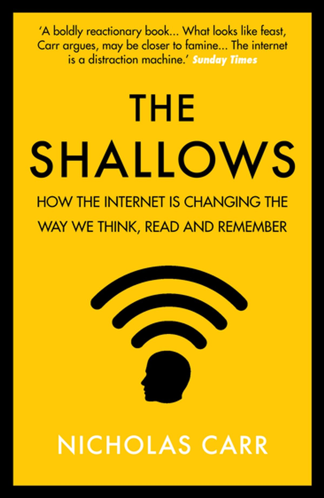
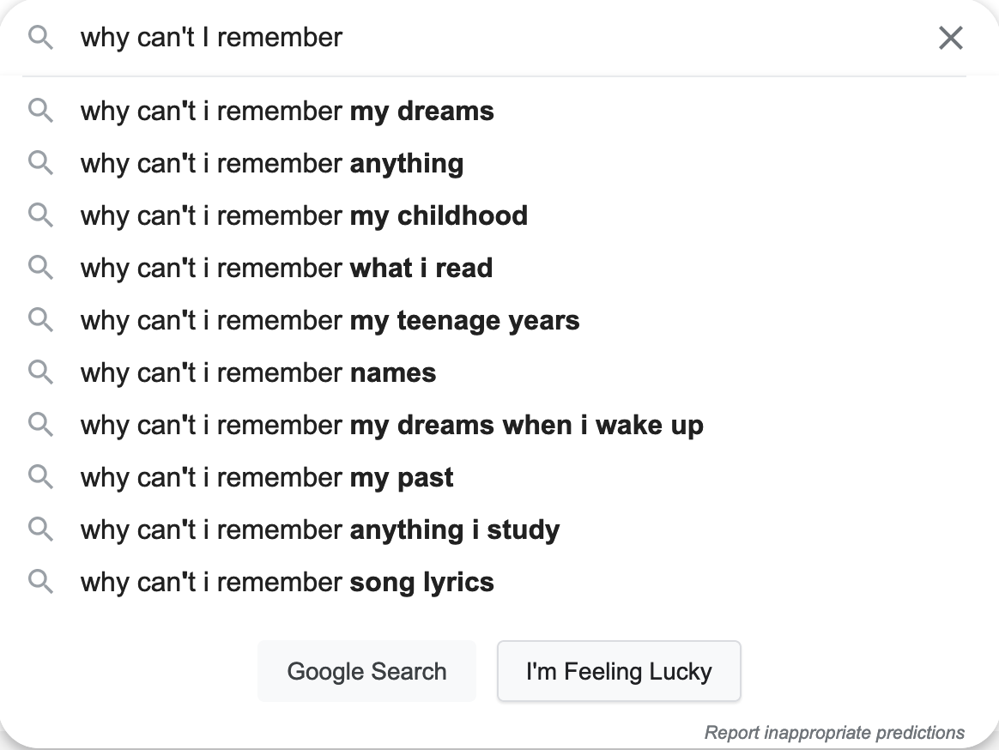

Local Knowledge
Within this pursuit to reduce I've been chewing on a theory. The Shallows by Nicholas Carr describes a transformative process our brains are going through. Instead of being the reservoir of knowledge, our brains are turning into indexes. So, for example, instead of remembering the keys of the C# scale, one just looks up the scale online again.

At first glance I didn't consider this much of an issue. Things are moving fast, so there's no need to store it all in your head. There's a database right there at any time. But when you give it more thought, some issues crop up. You become vacuous, one-dimensional, and dependent.
By vacuous I mean that, although you've amassed a bundle of reliable search terms, there's no knowledge coming from you. You just become an extension of the Internet. How uncomfortable a thought that is! To be only a smorgasboard of links. The best way to make knowledge yours is to sincerely make it yours: put it in your own words or branch off of what you learned. You can't if it's not stored in your mind… or you aren't properly learning.
You just become an extension of the internet.
So, subsequently, you become one-dimensional, or you feel "flat" in terms of who you are. There's no synthesis nor ownership of the knowledge you stumble upon, so you have less to build upon. There's less to do, as action springs from knowledge. Less to say. Still have a bunch of thoughts, yet they rarely mean anything. No strikes of insight waiting, as there isn't any base to draw from. The reality is that True Knowledge derives from experience and paying attention. Neither is being accomplished in a vicarious, passive mode which festers with online use.
And lastly, if you don't change, you get dependent. If you're just an index, you're now required to have some form of an internet connection. Big whoop you might say. Well, it isn't great to be dependent when you're thinking hard about some problem. You'll find yourself verifying every fact you vaguely know as you're trying to get to the bottom. Double tracking, triple backing, trying to find the correct reference (even though the search results are getting worse). How can you get anything done at this rate? You're likely wasting more time compared to sitting down and paying close attention.

The more I live the more I find there aren't any shortcuts. Either you put the work in or you will reap what you sow. So it is a good idea to evaluate what you may be neglecting - namely, your knowledge base that is right in your head. Although the internet can give you instant results for any question, it pays off to take the slower route. Take a break from the Internet for a bit. Write it down. Reference the source material. And such a foundation will serve you for years to come.